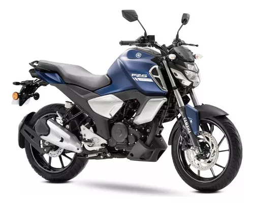
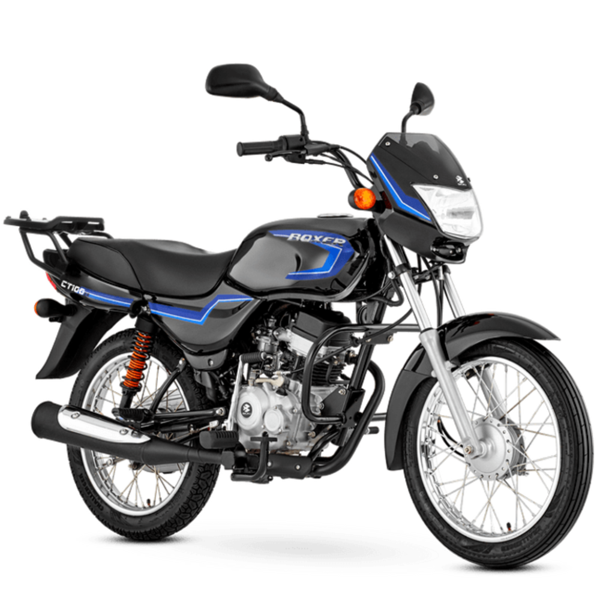

Pulsar NS 200
La Bajaj Pulsar NS200, anteriormente conocida como Bajaj Pulsar 200NS, es una moto deportiva fabricada por el fabricante indio de motocicletas Bajaj Auto. "NS" significa Naked Sport
COMPRAR

yamaha fz 250
Su transmisión mecánica de 5 cambios te permite un control absoluto mientras aceleras hasta su velocidad máxima de 140 km/h. Con una autonomía de hasta 595 km y un tanque de gasolina de 13.6 litros, la FZ 250 es la moto ideal para cualquier aventura urbana o en carretera.
COMPRAR

boxer ct 100
La Boxer CT 100 KS cuenta con puerto USB, tecnología Euro 3 y un moderno sistema de filtración de aceite que le permite incrementar la vida útil del motor y sus componentes, filtrando micropartículas de impurezas del aceite de motor. Con Boxer CT 100 KS el ahorro diario en combustible, sí se ve.
COMPRAR